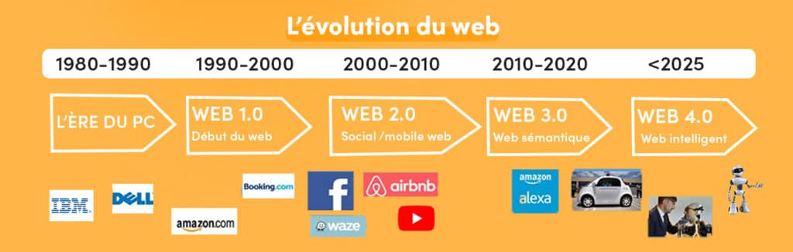
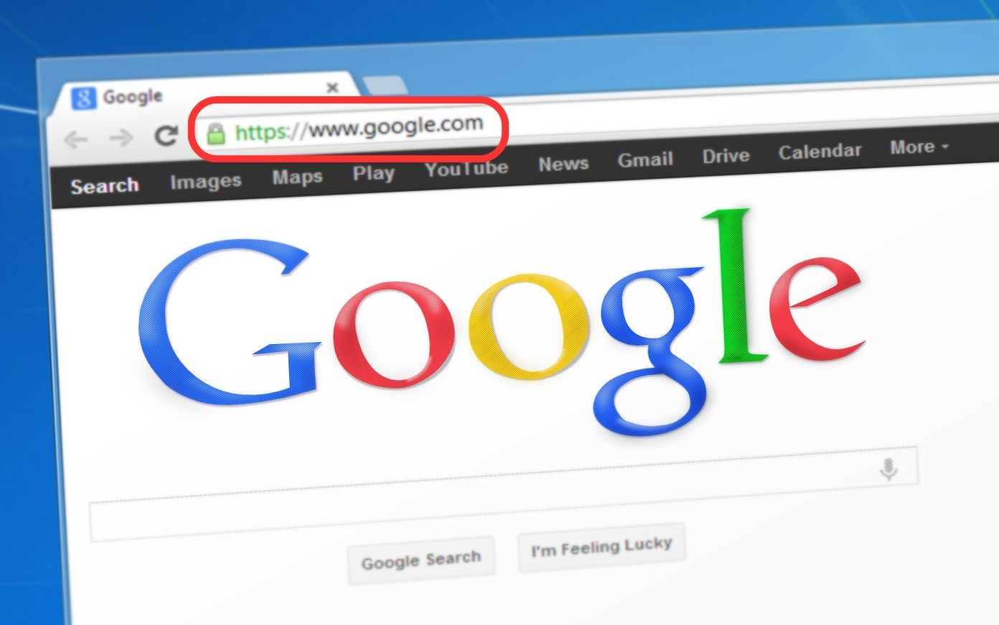

Comprendre les Fondamentaux du Web : Normes, Sécurité et Méthodes de Piratage
Différents sujets :
- Évolution des services et des supports d'informations du Web
- Notion d'url
- Processus de dépôt et de réservation des noms de domaine
- Normes de standardisation du Web
- Méthodes de « piratage »
Évolution des services et des supports d'informations du Web
Le web 1.0, ou web traditionnel, démarre dans les années 1990. C’est avant tout un web statique, centré sur la distribution d’informations. Majoritairement associé aux grandes entreprises. Il se caractérise par des sites orientés produits, qui sollicitent peu l’intervention des utilisateurs. C’est souvent la transcription en ligne des catalogues papier. Les premiers sites d’e-commerce datent de cette époque. En ce temps-là, le coût des programmes et logiciels propriétaires est énorme et l’explosion de la bulle dot.com, en 2000, remet en question cette approche de la toile.
Le web 2.0, ou web social, change fondamentalement la donne. Il privilégie la dimension de partage et d’échange d’informations et de contenus (textes, vidéos, images ou autres). Il voit l’émergence des réseaux sociaux, des smartphones et des blogs. Le web se démocratise et se dynamise. C’est l’époque des forums, des wikis, etc. L’avis du consommateur est sollicité en permanence et il prend goût à cette socialisation virtuelle. Toutefois, la prolifération de contenus de qualité inégale engendre une infobésité difficile à contrôler.
web 3.0, aussi nommé web sémantique, vise à organiser la masse d’informations disponibles en fonction du contexte et des besoins de chaque utilisateur, en tenant compte de sa localisation, de ses préférences, etc. C’est un web qui tente de donner sens aux données. Les algorithmes règnent en maître. C’est aussi un web plus portable qui fait de plus en plus le lien entre monde réel et monde virtuel et répond aux besoins d’utilisateurs mobiles, toujours connectés à travers une multitude de supports et d’applications malines ou ludiques.
Le web 4.0, ou web intelligent, est l’évolution logique du web sémantique. Il effraie autant qu’il fascine, puisqu’il vise à immerger l’individu dans un environnement digital de plus en plus prégnant. Basé sur la communication sans fil reliant les personnes et les objets à tout moment et en tout lieu dans le monde physique ou virtuel en temps réel, le web 4.0 pousse à son paroxysme la voie de la personnalisation ouverte par le web 3.0. Mais il pose par la même occasion de nombreuses questions quant à la protection de la vie privée, au contrôle des données, etc. C’est un terrain d’expérimentation où tous ne sont pas (encore) prêts à s’aventurer !
Notion d'URL
La notion d'URL (Uniform Resource Locator) fait référence à une adresse web qui permet d’accéder à une ressource spécifique sur Internet. Cette ressource peut être une page web, une image, un fichier, une vidéo, ou tout autre contenu accessible via le Web. L’URL est un format standardisé qui aide les navigateurs web à localiser et à afficher des ressources en ligne.
Composition d'une URL
Une URL est composée de plusieurs parties distinctes, chacune ayant un rôle précis pour indiquer comment accéder à la ressource.
1. Le schéma (protocole)
C’est la première partie de l’URL, qui indique le protocole utilisé pour accéder à la ressource. Les deux protocoles les plus courants sont :
- `http` (HyperText Transfer Protocol) : protocole utilisé pour la communication sur le Web.
- `https` (HyperText Transfer Protocol Secure) : version sécurisée de HTTP, qui chiffre les communications entre le client (navigateur) et le serveur.
Exemple : `https://`
2. Le nom de domaine
Le nom de domaine est l’adresse du serveur hébergeant la ressource. Il indique sur quel serveur (ordinateur connecté à Internet) la ressource se trouve. Il se compose généralement de deux parties :
- Le domaine principal : il identifie le site web (ex. `example`).
- Le domaine de premier niveau (TLD) : comme `.com`, `.org`, `.fr`, qui précise la catégorie ou le pays du domaine.
Exemple : `www.example.com`
3. Le chemin d'accès
Le chemin d'accès précise l’emplacement exact de la ressource sur le serveur. Il s’agit souvent d’un répertoire et d’un nom de fichier. Le chemin vient juste après le nom de domaine.
Exemple : `/articles/intro-url.html`
4. Les paramètres (facultatif)
Les paramètres sont des informations supplémentaires envoyées au serveur pour spécifier ou filtrer la ressource. Ils commencent par un point d'interrogation `?` et sont souvent utilisés dans les requêtes pour les pages dynamiques ou les API.
Exemple : `?id=123&sort=recent`
5. L’ancre (facultatif)
L’ancre permet de spécifier une section particulière de la page web. Elle est indiquée par un `` suivi d’un identifiant et permet de scroller automatiquement vers une section spécifique d'une page.
Exemple : `section2`
Voici un exemple d'URL complet : `https://www.example.com/articles/intro-url.html?id=123&sort=recentsection2`
cet exemple :
- `https` est le protocole utilisé.
- `www.example.com` est le nom de domaine du serveur.
- `/articles/intro-url.html` est le chemin d'accès au fichier ou à la page spécifique.
- `?id=123&sort=recent` représente les paramètres de la requête.
- `section2` pointe vers une section spécifique dans la page.
Fonctionnement d'une URL
Quand vous entrez une URL dans un navigateur :
- Le navigateur envoie une requête au serveur indiqué par le nom de domaine.
- Le serveur répond en envoyant la ressource demandée (ex. : une page web, un fichier).
- Le navigateur interprète la réponse du serveur (souvent en HTML) et affiche la ressource à l'utilisateur.
Importance des URL
- Accessibilité : Les URL permettent de localiser et d'accéder à des ressources spécifiques sur le Web de manière rapide et standardisée.
- Organisation : Les URL aident à structurer l'information sur un serveur. Les sites bien organisés utilisent des chemins et des noms de fichiers clairs pour rendre les ressources facilement accessibles et compréhensibles.
- SEO (Search Engine Optimization) : Les URL optimisées avec des mots-clés pertinents aident à améliorer la visibilité des pages web dans les résultats des moteurs de recherche.
En résumé, l’URL est une adresse standard qui permet d’accéder à des ressources sur le Web. Chaque partie d'une URL joue un rôle dans la localisation précise et la navigation vers cette ressource.
Principe de redirection :
La redirection d'URL est un mécanisme qui permet de rediriger automatiquement les utilisateurs d'une URL vers une autre. Cela se fait lorsqu'une page a été déplacée ou qu'on veut réorganiser les URL sans casser les liens.
Types principaux de redirections :
- Redirection 301 (Permanente) : Indique que l'URL d'origine a été définitivement déplacée vers une nouvelle adresse. Cela transmet la popularité (SEO) de l'ancienne page à la nouvelle.
- Redirection 302 (Temporaire) : Indique que la redirection est temporaire et que l'URL d'origine sera réutilisée plus tard.
- Meta Refresh : Redirection effectuée côté client, avec un délai, souvent utilisée dans le code HTML (pas idéale pour le SEO).
Les redirections sont utilisées pour maintenir une bonne expérience utilisateur et ne pas perdre le trafic ou le référencement lorsque des changements d'URL sont effectués.
https://developer.mozilla.org/fr/docs/Learn/Common_questions/Web_mechanics/What_is_a_URL
Processus de dépôt et de réservation des noms de domaine
Le processus de dépôt et de réservation d'un nom de domaine est une procédure qui permet d’enregistrer un nom unique sur Internet, pour qu'il puisse être utilisé comme adresse de site web (par exemple, www.example.com). Ce processus se fait via des bureaux d’enregistrement (registrars), qui sont des entités accréditées pour gérer l'enregistrement des noms de domaine. Voici comment fonctionne ce processus :
1. Recherche de disponibilité
La première étape consiste à vérifier si le nom de domaine que vous souhaitez est disponible. Cette vérification se fait via un moteur de recherche de noms de domaine, proposé par la plupart des bureaux d'enregistrement. Chaque nom de domaine doit être unique, donc il n’est pas possible d’enregistrer un nom déjà pris (à moins qu’il expire ou soit mis en vente par son propriétaire actuel).
2. Choix du nom de domaine et de l'extension
Le nom de domaine se compose de deux parties principales :
- Le nom principal : C’est la partie personnalisée (par exemple, "example").
- L’extension de domaine (TLD) : Comme .com, .org, .fr, qui correspond au domaine de premier niveau.
Il est important de choisir un nom pertinent et facile à mémoriser, ainsi qu’une extension adaptée à votre activité ou région (ex. : .com pour les activités internationales, .fr pour la France).
3. Sélection d'un bureau d'enregistrement (Registrar)
Une fois le nom de domaine disponible, vous devez choisir un bureau d'enregistrement (registrar) pour effectuer la réservation. Les registrars sont des entreprises accréditées par des organismes comme l'ICANN (Internet Corporation for Assigned Names and Numbers) qui gère les noms de domaine au niveau mondial. Quelques exemples de registrars populaires sont :
- GoDaddy
- OVH
- Google Domains
Ces entreprises agissent comme des intermédiaires entre vous et les registres qui gèrent les extensions de domaine.
4. Enregistrement et dépôt du nom de domaine
Une fois le nom de domaine sélectionné et le bureau d'enregistrement choisi :
- Vous remplissez les informations nécessaires : nom, adresse, email et autres coordonnées personnelles.
- Vous choisissez la durée de l'enregistrement (généralement de 1 à 10 ans).
- Vous payez les frais d'enregistrement, qui varient selon l'extension du domaine et le registrar choisi.
5. Validation de l'enregistrement
Une fois le nom de domaine payé et enregistré, vous recevez une confirmation de la part du bureau d'enregistrement. Le nom de domaine vous appartient pendant la durée de l'enregistrement et vous pouvez le renouveler à l'échéance pour conserver sa propriété.
6. Configuration des serveurs DNS
Après l'enregistrement, vous devez associer le nom de domaine aux serveurs DNS (Domain Name System), qui permettent de traduire le nom de domaine en adresses IP, afin de rendre votre site web accessible. Vous pouvez généralement configurer ces paramètres depuis l’interface du bureau d’enregistrement.
7. Renouvellement et gestion du nom de domaine
Un nom de domaine n'est pas acquis de manière permanente. Il doit être renouvelé à la fin de la période d’enregistrement pour éviter qu’il expire et soit mis à disposition d’autres utilisateurs. Les bureaux d'enregistrement envoient des rappels avant la date d'expiration.
Conclusion
Le dépôt et la réservation d'un nom de domaine sont des étapes simples mais essentielles pour assurer une présence en ligne. Il s'agit de choisir un nom de domaine disponible, de l'enregistrer via un bureau d'enregistrement et de configurer les serveurs DNS pour rendre le site web accessible. Une gestion proactive du renouvellement permet de garder le nom de domaine sous votre contrôle.
Normes de standardisation du Web
Les normes de standardisation du Web sont des règles et des protocoles établis pour garantir que les technologies du Web fonctionnent de manière cohérente et interopérable sur tous les navigateurs, appareils et plateformes. Elles sont élaborées par plusieurs organisations et consortiums spécialisés. Ces normes couvrent des aspects tels que la structure des pages web, la gestion des médias, la sécurité des échanges, et les interactions utilisateur.
Principales organisations de standardisation du Web
1. W3C (World Wide Web Consortium)
Le W3C est l’organisation principale chargée de la standardisation des technologies du Web. Fondée par Tim Berners-Lee (inventeur du Web), elle a pour mission de développer des spécifications ouvertes afin d’assurer l’universalité et l’interopérabilité du Web.
Rôles clés :
- Établir des normes comme le HTML (HyperText Markup Language), CSS (Cascading Style Sheets), et XML (Extensible Markup Language).
- Promouvoir l’accessibilité à travers les Web Content Accessibility Guidelines (WCAG), qui visent à rendre le Web utilisable par les personnes en situation de handicap.
- Élaborer des spécifications pour le DOM (Document Object Model), SVG (Scalable Vector Graphics), et WebRTC (Real-Time Communication).
Exemples de normes importantes du W3C :
- HTML5 : La norme actuelle pour la structure des pages web.
- CSS3 : Norme de style utilisée pour la présentation et la mise en page des documents web.
- WCAG : Recommandations pour rendre le contenu web accessible aux personnes handicapées.
2. IETF (Internet Engineering Task Force)
L'IETF est une autre organisation importante qui développe et promeut des normes techniques pour Internet en général. Bien que l'IETF ne se concentre pas exclusivement sur le Web, elle joue un rôle essentiel dans les protocoles sous-jacents qui permettent au Web de fonctionner.
Rôles clés :
- Normes pour les protocoles de communication tels que HTTP (Hypertext Transfer Protocol), HTTPS, et FTP (File Transfer Protocol).
- Standardisation des adresses IP et des protocoles liés à la gestion des noms de domaine via DNS (Domain Name System).
Exemples de normes importantes de l'IETF :
- HTTP/1.1 et HTTP/2 : Protocoles pour le transfert d'informations entre le serveur et le client.
- TLS (Transport Layer Security) : Protocole utilisé pour sécuriser les échanges sur Internet (comme HTTPS).
3. WHATWG (Web Hypertext Application Technology Working Group)
Le WHATWG est un groupe de travail formé en 2004 en réponse à certaines divergences sur l'évolution des standards web. Ce groupe, composé de membres comme Apple, Mozilla, Google et Opera, se concentre principalement sur le développement du standard HTML.
Rôles clés :
- Développer de manière continue le standard HTML et les API JavaScript pour améliorer l’expérience utilisateur.
- Maintenir des standards ouverts, notamment pour les API du navigateur et l'interaction avec les documents Web.
Exemple de norme importante du WHATWG :
- HTML Living Standard : Version "vivante" d’HTML, développée de façon continue pour s’adapter rapidement aux évolutions des besoins du Web.
4. ECMA International
L'ECMA est une organisation qui normalise plusieurs langages de programmation, dont ECMAScript, la spécification du langage qui est à la base de JavaScript.
Rôles clés :
- Développement des versions successives d'ECMAScript pour améliorer la performance, la sécurité et l’interopérabilité de JavaScript sur les plateformes web.
Exemple de norme importante de l'ECMA :
- ECMAScript (ES6 et versions ultérieures) : Norme pour JavaScript, avec des améliorations continues pour répondre aux besoins des développeurs modernes.
5. ISO (International Organization for Standardization)
L'ISO est une organisation internationale de normalisation qui publie des normes pour une large gamme d’industries. Dans le domaine du Web, certaines de ses normes sont particulièrement pertinentes, notamment en matière de sécurité et de cryptographie.
Rôles clés :
- Développer des normes pour la sécurité des informations, les formats de fichiers multimédias (ex. : JPEG, MP3), et les protocoles de cryptographie.
Exemple de norme importante de l'ISO :
- ISO/IEC 27001 : Norme de gestion de la sécurité de l'information.
6. Unicode Consortium
Le Unicode Consortium est responsable de la standardisation du codage des caractères pour permettre une représentation cohérente du texte à travers différents systèmes et plateformes.
Rôles clés :
- Développer l’Unicode Standard, qui permet aux développeurs de représenter des caractères de toutes les langues, ainsi que des emojis, sur le Web.
Exemple de norme importante de Unicode :
- Unicode : Système de codage des caractères utilisé dans HTML, XML, et de nombreux autres formats de texte sur le Web.
Conclusion
Les normes de standardisation du Web sont essentielles pour garantir que les sites et applications web fonctionnent de manière uniforme sur tous les navigateurs et appareils. Elles couvrent des aspects aussi divers que la structure des pages web (HTML), la présentation (CSS), la sécurité (TLS), et la communication (HTTP). Les principaux acteurs comme le W3C, l’IETF, et le WHATWG travaillent de concert pour maintenir et faire évoluer ces standards en réponse aux nouvelles technologies et aux besoins des utilisateurs.
Méthodes de « piratage »
Voici difféentes méthodes de piratage informatique principales :
- Virus : Logiciel malveillant qui se propage en infectant d'autres fichiers ou systèmes, causant des dommages ou volant des données.
- Phishing : Technique d'usurpation d'identité par laquelle un attaquant incite l'utilisateur à divulguer des informations sensibles (mots de passe, numéros de carte bancaire) via de faux e-mails ou sites web.
- Grabbing : Capture d’informations sensibles comme les identifiants ou mots de passe à l'aide de logiciels espions ou par interception de données.
- Hacking : Accès non autorisé à un système informatique pour voler, altérer des données, ou prendre le contrôle du système.
- Ransomware : Type de malware qui chiffre les fichiers d'un utilisateur et exige une rançon pour les déchiffrer.
- Keylogging : Enregistrement des frappes au clavier pour capturer des informations sensibles comme les mots de passe.
- DDoS (Distributed Denial of Service) : Attaque visant à rendre un site ou un service indisponible en le submergeant de requêtes simultanées.
- Trojan (Cheval de Troie) : Programme malveillant déguisé en logiciel légitime, qui permet aux attaquants de prendre le contrôle du système.